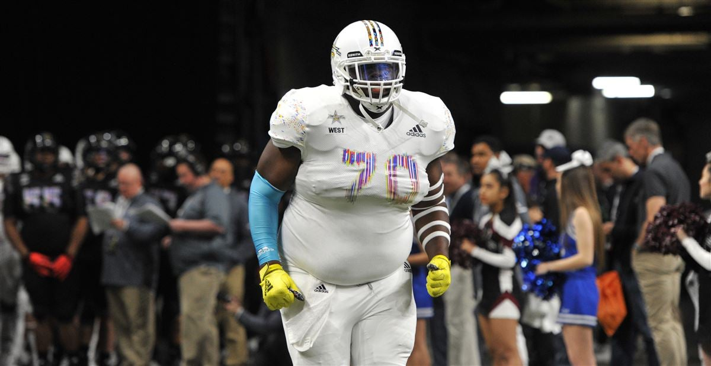

Coach Ogeron talks, smells, looks, and coaches the same.
Troughout history LSU has had terrible coaches if it wasn't boring football with Les Miles
Now they have Coach Ogeron who needs subtitles in every interview even though the only language he speaks is english
LSU has always had big, fat, unathletic offensive lineman
Consistently LSU's offensive line has had a weight average over 400 pounds
LSU has always had until this year quaterbacks that put up a averge of 5 and a half points a game
This year is a once in a century exception for LSU's offense and next year will come back down to reality again somehow scoring less than Iowa
This is a picture of one of LSU's better quarterbacks in the last decade except he is a safety for Vanderbilt now smh...